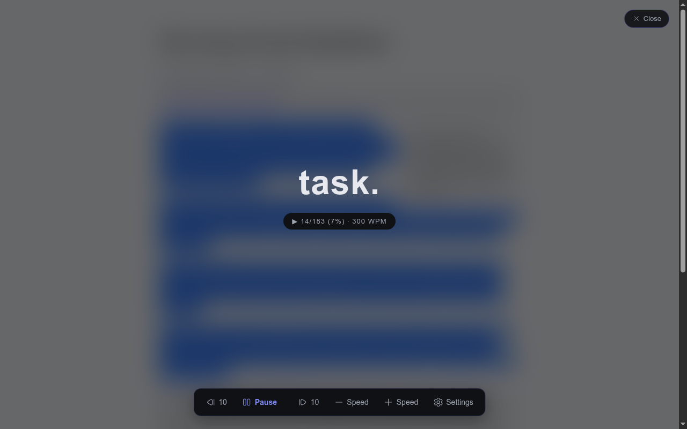
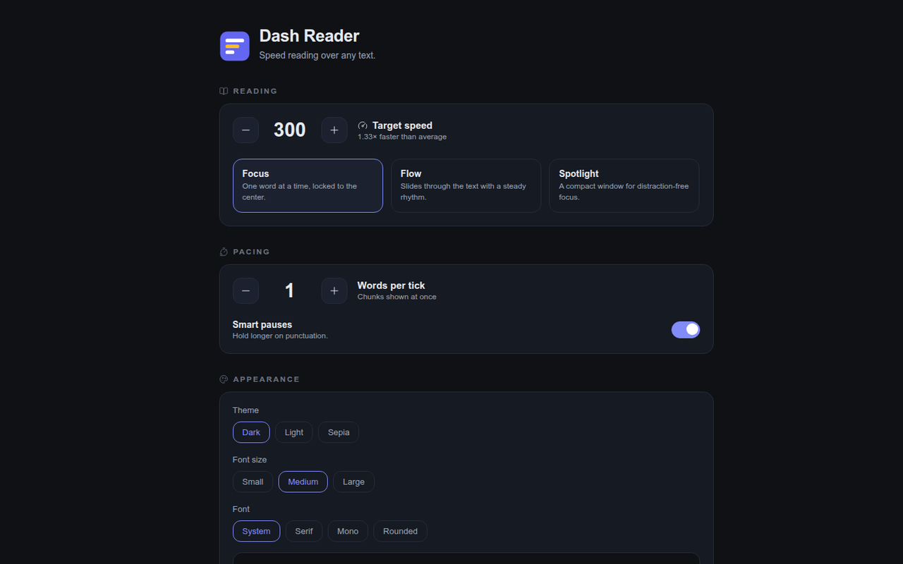
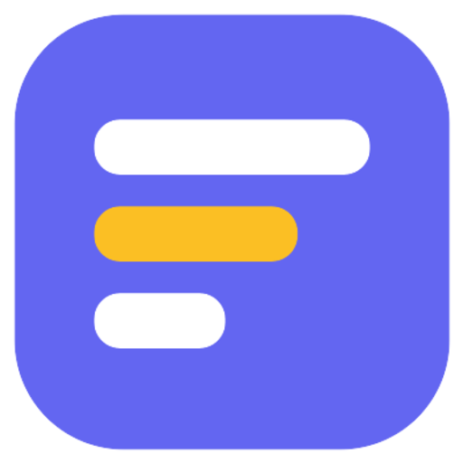

Dash Reader.
Read anything on the web 3× faster — one word at a time, at a fixed point, so your eyes never move.
Your eyes never move.
RSVP — Rapid Serial Visual Presentation. Select text or start on the whole article, and Dash Reader flashes one word at a time at a fixed point on screen. No scanning, no saccades, no re-reading. Just the words, at the pace you set.
Two ways in
Read the selection
Select any text on the page and press Alt+R. The overlay opens paused at the first word — press Space when you're ready.
⌘ ready when you areRead the article
Alt+R with no selection — or the toolbar icon — highlights the first word of every paragraph. Click one and reading starts right there.
⇧ start anywhereTiming that feels like thought
Smart punctuation pauses
Commas and colons rest longer, sentence enders ×3, paragraph breaks hold the longest — the words already on screen, not a flashing marker.
Multi-word chunks
A chunk stays up as long as its words would take one at a time — so wpm means the same thing at any chunk size.
Long tokens, handled
URLs, numbers and long words stay atomic; oversized tokens auto-shrink past 20 characters.
Drift-free playback
requestAnimationFrame accumulation, not setTimeout chains. A 1000-word article holds its rhythm to the millisecond.
Read with your ears, in step.
Aloud is a mode, not a transport control: it arms the voice without making a sound. Play drives everything — and the voice becomes the clock.

Zero style bleed
- ▸Rendered in a Shadow DOM with all: initial — the page's CSS can't touch it, and it can't touch the page.
- ▸Dark / light / sepia themes, three font sizes, four fonts — the choice applies everywhere, reader to options page.
- ▸Keyboard-first: Space pause · ←/→ step · ↑/↓ speed · [ / ] skip 10 · Esc close.
- ▸Control bar auto-hides while reading; Hugeicons throughout.

Proof, not vibes
- ▸Every control saves to chrome.storage.sync — and a storage.onChanged listener applies it to every reader already open. No reload needed.
- ▸Live preview of theme, size and font right on the options page.
Running in two minutes
chrome://extensionsenable Developer mode, top right
Load unpacked → select dist/built by the commands on the right
Open any article, press Alt+Ror click the toolbar icon
$ npm install
$ npm run build
→ dist/ content · background · options · icons
✓ packaged
$ npm test
⚡ tokenizer · pauses · timing · stats · tts
✓ all green

Read 3× faster.
One word at a time · fixed point · your pace · your voice
dash-reader v0.1.0 · private project — all rights reserved